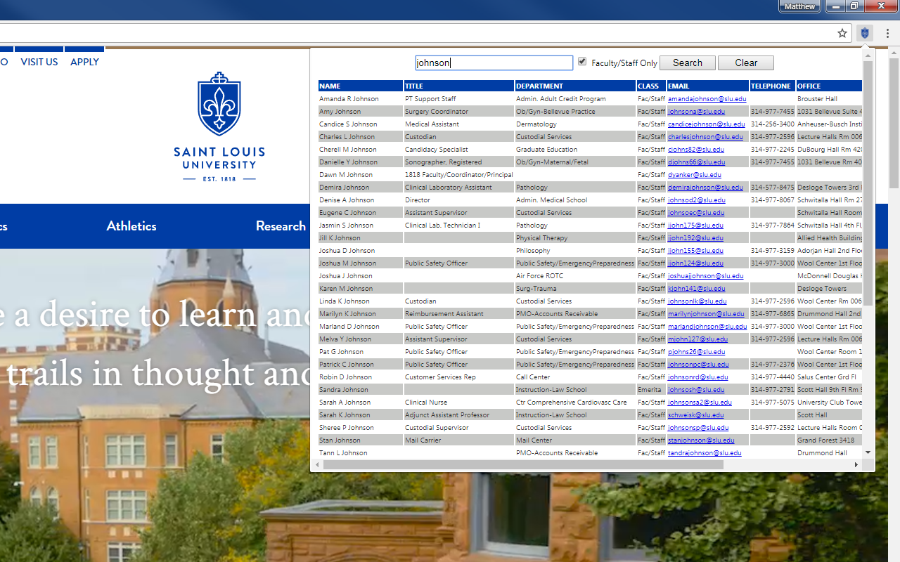

SLU People Finder Web Browser Extension
Search SLU People Finder Faster

Search SLU People Finder from any webpage.
Use "Alt+P" to open the web extension pop-up window, type your query, and press enter to see results.
Source code is available on GitHub.
| For Firefox | For Chrome |